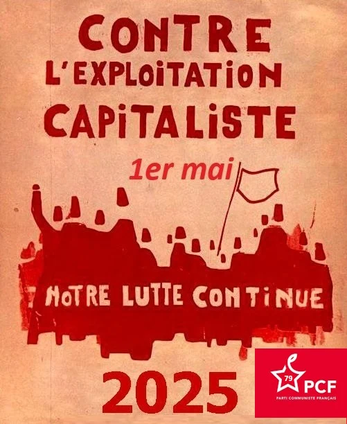

Appel archivé
1er Mai. Nos rendez-vous à Niort et Bressuire
Date indiquée par Facebook · 24 avril 2025
Repères éditoriaux
Nous avions appelé à répondre à la mobilisation intersyndicale. Le 1er mai 2025, les cortèges se retrouvaient à 11 h à la Brèche à Niort et à 11 h devant la gare de Bressuire.
Texte conservé avec la publication
Le 1er mai, journée internationale de lutte des travailleuses et des travailleurs.
La Fédération du PCF79 appelle tous les travailleurs et travailleuses, militants et sympathisants, à répondre à l'appel de l'intersyndicale
A NIORT à 11 heures Place la Brèche
A BRESSUIRE à 11 heures devant la gare
Mobilisons nous pour la démocratie et la Paix, les libertés, la justice sociale, la défense des travailleurs et contre l'exrême-droite !

Sources
Archive rouge · export Facebook · AR-0002-FB-01140
À lire aussi · À Niort, un 1er Mai de lutte pour les droits sociaux et la paix